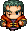
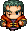

|
Parabéns! Você ajudou Valde  a vencer Zane  de forma majestosa! Valde está ficando famoso e agora empunha a espada de Zane, Tizona! a vencer Zane  de forma majestosa! Valde está ficando famoso e agora empunha a espada de Zane, Tizona!
Não pare por aí, vamos em frente! A próxima batalha é contra Ann  , uma mística garota que tem forças desconhecidas. Descubra uma maneira de derrotá-la para assim ir a última batalha. Ann foi vista no Hotel Morgadeiros. , uma mística garota que tem forças desconhecidas. Descubra uma maneira de derrotá-la para assim ir a última batalha. Ann foi vista no Hotel Morgadeiros.
Você está em: Campos Barbários
Missão atual: Mística Ann
|